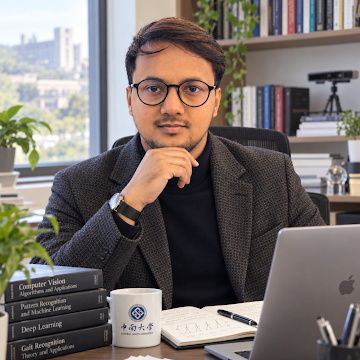

MOTION AS A SIGNATURE
Recognizing people
through the way they move.
Investigating gait as a biometric signal, with deep learning methods for human identification under challenging real-world conditions.
I’m Md. Mashiur Rahaman.
I explore how intelligent systems see, recognize, and understand people—from the way we walk to the 3D signals we leave behind.
School of Automation, Central South UniversityChangsha, China

I’m a PhD candidate in Control Science and Engineering at Central South University, working under the supervision of Prof. Tang Jin.
My research brings together gait recognition, LiDAR point-cloud analysis, and explainable AI. I’m interested in what vision models learn, why they fail, and how we can make them more reliable in real-world conditions.
Alongside biometrics, I explore biomedical AI, medical image analysis, and multimodal learning—connecting computational research with human-centered applications.
View my ORCID profile ↗From motion to meaning, my work explores robust recognition and interpretable intelligence.
Investigating gait as a biometric signal, with deep learning methods for human identification under challenging real-world conditions.
Exploring 3D point-cloud representations, gait features, and explainable recognition systems.
Conference and journal submission updates, as listed on my GitHub profile.
COMPAS 2026 · University of Dhaka, Bangladesh · October 9–10, 2026
IEEE T-BIOM
Pattern recognition & intelligent systems
Publication titles and full citation details are available through my academic profiles. View source ↗
Research across China and Bangladesh, grounded in software engineering and computer science.
Central South University, China
School of Automation · Advisor: Prof. Tang JinNortheastern University, China
Supervisor: Dr. Keming MaoDaffodil International University, Bangladesh
Supervisor: Dr. Fernaz Narin NurChinese Government ScholarshipPhD study, 2023 · Master’s study, 2019
Interested in biometrics, computer vision, or biomedical AI?
Let’s exchange ideas and explore what we can build together.